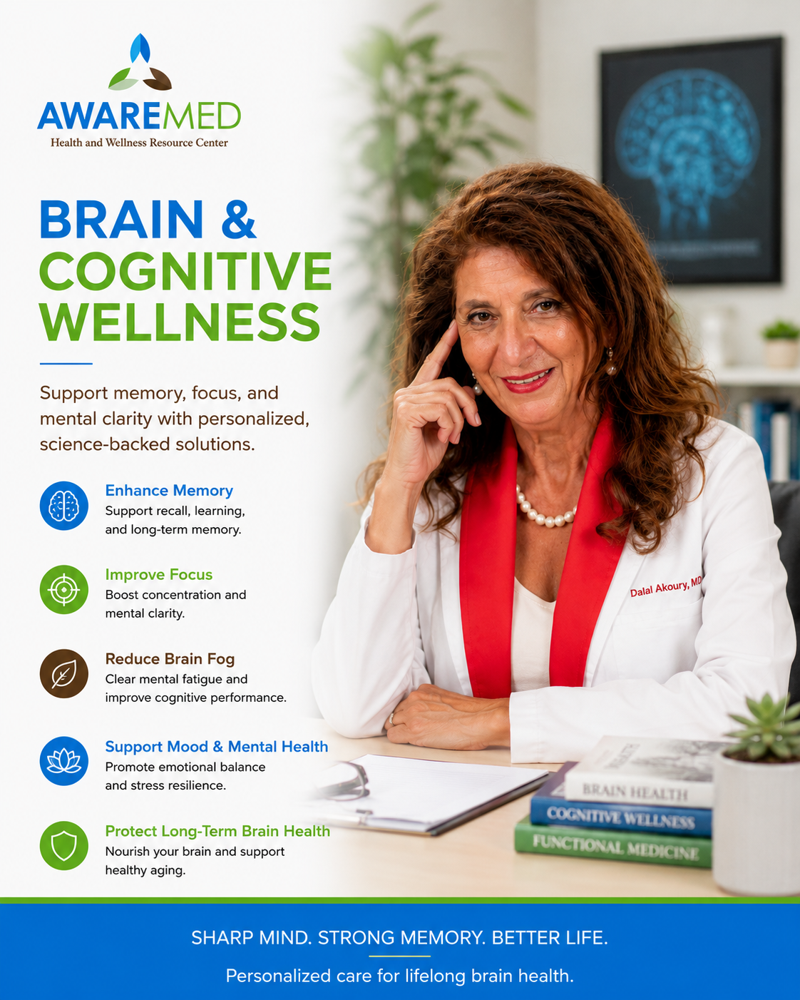

Whole-Person Care Built Around Your Story
At AWAREmed, Dr. Dalal Akoury, MD looks beyond symptoms to uncover root causes, supporting your body, mind, and spirit through personalized integrative and functional medicine.
Meet Dr. Dalal Akoury, MD
Founder & Medical Director, AWAREmed
Care Designed Around You, Not a Protocol
We combine conventional understanding with integrative, hormonal, nutritional, and cellular health strategies, tailored to your history, biology, and goals.
A Whole-Person Approach
Body, mind, and spirit are deeply connected. Your care plan is built around your full story, not just lab values.
A Warm, Unhurried Setting
Patients describe our clinic as calm and compassionate, a place where you are truly heard and never rushed.
Physician-Led Precision Care
Every plan is guided personally by Dr. Dalal Akoury, MD with expertise spanning integrative, functional, and regenerative medicine.
Comprehensive, Thoughtfully Delivered Care
Eight specialty areas, each designed around your unique health story. Hover to explore, click to learn more.

Integrative Oncology Support
Whole-person care supporting your healing journey, mind, body, and spirit, alongside conventional cancer treatment. Healing Beyond Treatment. Stronger Together.
Learn more →
IV Therapy & Hydration
Physician-supervised intravenous nutrient and hydration support, personalized to you.
Learn more →
Hormone Optimization (BHRT)
A careful look at your full hormonal picture to restore balance, energy, and well-being.
Learn more →
Regenerative Medicine
Advanced, science-backed therapies that work with your body to repair, restore, and rejuvenate naturally. Heal. Restore. Rebuild. Live Better.
Learn more →
Chelation & Detox Support
Carefully monitored, physician-supervised detoxification and heavy metal support.
Learn more →
Gut Health & Functional Medicine
Root-cause care to restore balance, improve digestion, and support whole-body wellness. Advanced testing to uncover and address underlying contributors to your health. Heal Your Gut. Transform Your Health.
Learn more →
Brain & Cognitive Wellness
Support memory, focus, and mental clarity with personalized, science-backed solutions. Sharp Mind. Strong Memory. Better Life.
Learn more →
Skin & Anti-Aging
Aesthetic and wellness services to help you look and feel your very best.
Learn more →
Dr. Dalal Akoury, MD
Dr. Akoury is the founder of AWAREmed Health & Wellness Resource Center, an integrative physician whose expertise spans functional medicine, regenerative medicine, anti-aging, metabolic health, and integrative oncology support.
Her background includes pediatrics, emergency medicine, public health, and oncology-related training. She speaks English, Arabic, French, and Spanish, welcoming patients from around the world both in-person and virtually.
Her approach is simple: listen deeply, look beyond the obvious, and build a truly personalized care plan that honors you as a whole person.
Multi-Specialty Training
Pediatrics, emergency medicine, public health & integrative oncology
Global Reach
Consults in English, Arabic, French & Spanish, locally and virtually
Root-Cause Medicine
40+ years uncovering what conventional care may have missed
What Happens When You Come to AWAREmed
Three steps. Complete support from your very first visit.
Your Story
You share your complete health history. We listen to everything, including what conventional care may have overlooked or dismissed.
Your Assessment
Dr. Akoury conducts a comprehensive, personalized evaluation using advanced diagnostics and functional testing.
Your Plan
You leave with a personalized, root-cause care plan, and our full support as it evolves with your health journey.
Premium Care You Can Trust
We meet the highest standards in integrative medicine, so you receive care that's both compassionate and clinically sound.
Physician-Led Care
Every treatment plan is personally designed and supervised by Dr. Dalal Akoury, MD.
HIPAA Compliant
Your health information is protected with strict privacy and confidentiality practices.
Virtual & In-Person
Serving patients locally in Johnson City and virtually across the globe.
Evidence-Informed
Integrative approaches rooted in science, research, and clinical experience.
4 Languages Spoken
English, Arabic, French, and Spanish, so you can communicate comfortably.
Collaborative Approach
We work alongside your existing providers, never in place of conventional care.
Patient Education
You leave every visit informed, empowered, and confident in your health plan.
Whole-Person Wellness
Mind, body, and spirit, we look at every dimension of your health.
In Their Own Words
Hear from patients whose lives have been positively impacted by integrative, personalized care at AWAREmed.
Testimonials reflect individual experiences shared with permission. They are not a guarantee of results. Individual results vary.
Latest Health Insights
Evidence-informed articles to help you understand integrative medicine, make informed decisions, and support your wellness journey.
What Is Functional Medicine, And Why Does It Matter?
Functional medicine looks for root causes rather than managing symptoms. Learn how this approach differs from conventional care.
IV Therapy: Benefits, What to Expect & Who Qualifies
Intravenous nutrient therapy can support hydration, immunity, energy, and recovery. Here's what you need to know.
Understanding Bioidentical Hormone Replacement Therapy (BHRT)
Hormone imbalance affects millions. Discover how BHRT works and whether it might support your health goals.
We Speak Your Language
Dr. Akoury consults in English, Arabic, French, and Spanish. Patients from around the world, and right here in Johnson City, are warmly welcomed.
Frequently Asked Questions
Answers to the most common questions about AWAREmed, Dr. Akoury, and integrative medicine.
Take the First Step Toward a Healthier You
Schedule a consultation with Dr. Dalal Akoury, MD and discover a truly personalized, whole-person approach to your health.